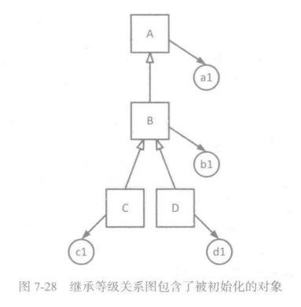

图覆盖｜元素、规范、用户实例
设计元素的图覆盖
设计元素的结构化图覆盖
-
通常需要基于软件组件的 耦合(coupling) 关系来创建图
- 应用于设计元素的大部分测试准则要求必须访问程序组件之间的 连接
-
应用结构化设计覆盖最常用的图叫做 调用图(Call Graph)
- 结点代表
方法或单元 - 边代表
方法的调用
- 结点代表
-
之前的图覆盖准则也可以应用于调用图
- 节点覆盖 要求每个方法至少被调用一次
- 所以也被称为方法覆盖
- 边覆盖 要求每次调用都被至少执行一次
- 所以也被称为调用覆盖
- 在调用图中点覆盖和边覆盖的效果不好
- 内部方法之间可能不会彼此调用
- 节点覆盖 要求每个方法至少被调用一次
-
继承和多态
- 注意： 只是书本作者初步想法，尚未广泛应用
- 继承等级关系图(inheritance hierarchy)
- 在面向对象的软件编程中，不能直接测试类，因为它们是抽象的不可执行的
- 继承等级关系图中的边不代表执行的流程，而是指代继承的依赖关系
- 因此需要在原图基础上对其中的每个类进行实例化

- 面向对象的调用覆盖(OO call Coverage): 要求调用图中的每个类的对象必须覆盖
- 这个准则是聚合准则，因为它要求调用覆盖必须包括每个类的至少一个对象
- TR 包含类层次结构中为每个类实例化的对象的调用图中的每个可达节点
- 全对象调用(OO Object Call)准则 : 要求每个类的每个对象都必须被实例化
- TR 包含类层次结构中为每个类实例化的
每个对象的调用图中的每个可达节点
- TR 包含类层次结构中为每个类实例化的
设计元素的数据流图覆盖
- 术语
- 调用者 Caller: 调用其他单元的单元
- 被调用者 Callee: 被调用的单元
- 调用点 Call site: 调用实现时所在的语句
- 实参 Actual parameter: 调用者拥有的变量
- 形参 Formal parameter: 赋值给被调用者的变量
- 两个单元的调用界面就是由实参到形参的映射
-
在集成测试中，通常只关心程序单元
接口能正常工作- 只需要关注在调用单元中和从被调用单元返回 之前 变量的 最后 定义，以及在调用单元中和从被调用单元返回 之后 变量的 首次 使用
-
最后定义 Last-def
- 用来定义一个变量 x 的一组节点的集合，对于这个变量来说，存在一条从这些节点经过调用点再到达另一单元中使用的无重复定义路径
- 可以从调用方到被调用方(参数或共享变量) ，或者从被调用方到调用方作为返回值
- 用来定义一个变量 x 的一组节点的集合，对于这个变量来说，存在一条从这些节点经过调用点再到达另一单元中使用的无重复定义路径
-
首次使用 First-use
- 一个变量 y 的使用所在的一组节点的集合。对于 y 来说，存在一条从起始节点（如果使用是在被调用者）或调用点（如果使用是在调用者）到达这些节点的
无重复定义且无重复使用的路径
- 一个变量 y 的使用所在的一组节点的集合。对于 y 来说，存在一条从起始节点（如果使用是在被调用者）或调用点（如果使用是在调用者）到达这些节点的
- 耦合的定义使用路径(coupling du-path) : 从一个最后定义到一个首次使用的路径
- 全耦合定义(All-Coupling-Def)覆盖 : 要求执行从每个最后定义到达至少一个首次使用的路径
- 全耦合使用(All-Coupling-Use)覆盖 : 要求执行从每个最后定义到达每个首次使用的路径
- 全耦合定义使用(All-Coupling-du-Path)覆盖 : 要求游历每一条从每个最后定义到每个首次使用的简单路径
- 重要事项
- 只考虑在被调用者中使用或定义的变量
- 必须关注类和全局变量
隐式的初始化 - 不专门考虑 “可传递的定义使用对”
- 如果单元 A 调用单元 B, 单元 B 调用单元 C, A 中的最后定义不会到达 C 中的首次使用
- 只考虑
数组中的一个元素的引用来代表对整个数组的引用
设计规范的图覆盖
- 设计规范(desigh specification) 描述了软件应该展示的方方面面
- 设计规格可能反映也可能不反映实现情况
- 更准确地说 —— 实现可能并不完全反映规范
- 设计规范通常被称为软件的模型
测试顺序约束
-
基于类的调用图通常是不连通的，在很多情况下比如带有朝向数据类型(Abstract Data Type)的时候，一个类内部的方法间不会相互调用。然而，调用的
顺序几乎总是受到规则的约束：- 许多抽象数据类型在使用前都必须初始化
- 只有向一个栈中压入元素后，才可以从这个栈中弹出元素
-
顺序约束(sequencing constraint) 是将顺序限制施加于某些被调用的方法的规则
- 它们可以被编码为先决条件或其他规范
- 顺序约束有时显式表示出来，有时隐式显示出来，有时不以任何方式表示，有时顺序约束被写成前置条件，或是其他的规范
- 顺序约束不能覆盖所有的行为，只能抽象出一些关键的方面
- 使用顺序约束来生成测试需求
- 目标是找到
违反顺序约束的路径 - 如果程序正确，所有的测试要求将不可行
- 目标是找到
测试软件的行为状态
-
基于规范使用图的另一种主要方法是通过应用某种形式的 有限状态机 (finite state machine, FSM) 来为软件的行为状态建模
-
有限状态机(FSM) 是一个描述在执行过程中如何修改软件变量的图
- 用节点代表软件运行行为中的状态
- 用边代表状态之间的迁移
- 局限性: FSMs 对于具有很多状态的程序(例如 gui)并不总是实用的，状态数太多，容易引起状态空间爆炸
-
动作可以表示对变量或变量条件的更改
- 迁移动作、入口动作、出口动作
- 前置条件(precondition) 也称作监控条件(guard), 定义了激活迁移变量所需要的特殊值
- 触发事件(triggering event) 是导致迁移发生所需的变量值的改变
-
有限状态机中的覆盖要求
- 节点覆盖：需要有点状态机中的每个状态被至少访问一次，也称作状态覆盖(state coverage)
- 边覆盖：要求有限状态机中的每条迁移至少被访问一次，也称作迁移覆盖(transition coverage)
- 边对覆盖：执行所有迁移对(transition-pair)
-
在有限状态机中使用数据流覆盖有些麻烦
- 在大部分有限状态机的定义中，节点不允许含有变量的定义或使用
- 即所有的动作都在迁移上
- 有限状态机中具有
相同节点的不同边不需要一样的定义集合和使用集合 - 根据触发器的语义，相关变量改变的影响会立即发生作用，随着迁移进入下一状态
- 触发变量的定义会
立即到达使用
- 触发变量的定义会
- FSM 不总能对所有变量的赋值进行建模
- 可以清除标注出使用，但不容易找到定义
- 在大部分有限状态机的定义中，节点不允许含有变量的定义或使用
- 从程序中推导 FSMs 的策略
- 结合控制流图（不推荐）
- 构造出来的不是真正的 FSM，不能反映状态变化情况
- 方法必须回到合适的调用点
- 意味着包含了内在的不确定性
- 代码实现在构图之前必须完成
- 使用软件结构（不推荐）
- 考虑软件操作的整体流程
- 不是真正的状态
- 这种推到非常主观，不同的测试者会画出不同的图
- 需要对软件深入了解，需要提供详细的设计
- 基于
状态变量建模（推荐）- 状态变量通常很早就定义好了
- 第一步是识别状态变量，然后选择哪些和 FSM 有实际的联系（例如全局变量和类变量）
- 理论上，每个状态变量值的组合都定义了一个不同的状态，有状态爆炸的风险，需要简化模型
- 在实践中，我们必须确定
全部处于同一状态的范围或值集
- 使用隐式或显示的规范
- 结合控制流图（不推荐）

- 一个 FSM 可以被包含在另一个 FSM 中
- 将图覆盖应用于 FSM 的权衡
- 优点：
- 可以在实现之前设计测试
- 分析 FSMs 比分析源代码要容易得多
- 缺点：
- 有些实现决策在 FSM 中没有建模
- 由于推导 FSMs 的主观性质，存在多种结果
- 测试必须“映射”到程序的实际输入 —— 在 FSM 中出现的名称可能与程序中的名称不同
- 优点：
用例的图覆盖
- UML 用例通常用于表达软件需求
- 它们帮助表达计算机应用程序的
工作流程
- 它们帮助表达计算机应用程序的
-
活动图展示的是活动之间的流动
- 活动可以给不同的事情建模，包括状态的改变、返回值和逻辑计算
- 推荐使用活动来为用例建模
- 活动图有两种节点：动作状态和顺序分支
-
构建活动图：
- 用例描述中的数字标注的步骤表达了角色所做的行为
- 这些步骤对应于软件的输入或输出，是活动图中的行为
状态节点 - 用例中的替换选项代表软件或角色所做的决定，是活动图中的
顺序分支节点
-
对于从用例中构建的活动图：
- 通常不包含很多循环，所含大部分循环有严格的上下限或确定的循环数
- 多项子句的复杂谓词是很少见的，这意味着逻辑覆盖准则通常无用
- 没有明显的数据定义使用对，
数据流覆盖准则不适用

用例场景
- 用例场景是一条用例的
实例，或是贯穿用例的一条完整路径 - 场景测试(Scenario Testing)
- 应该对用户有语义上的意义
- 路径的数量通常是有限的
- 使用
指定路径覆盖，得到的集合 S 就是所有场景的集合- 如果测试人员包括了所有的路径作为场景，那么指定路径覆盖就等同于完全路径覆盖
- 选择场景由人的专业知识来定，因此
指定路径覆盖不一定包含边覆盖或节点覆盖 - 在实际情况中，指定路径覆盖应该覆盖所有的边
本博客所有文章除特别声明外，均采用 CC BY-SA 4.0 协议 ，转载请注明出处！